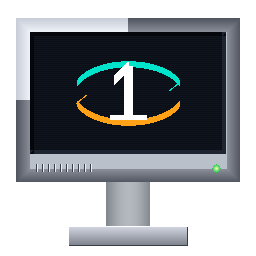

OneScreen一块高素质屏幕，两台主机。不用昂贵 KVM，不用按显示器难按的按键。双击托盘秒切，配合 Oink 鼠标划过屏幕边缘瞬间全自动切屏。
信源: DisplayPort 1 (VCP 0x0F) · 4K 144Hz
在拥有一块支持多接口的高刷显示器时，纯软件调度是桌面极客的终极答案
每一处细节都为「无感」与「安全」而生
与 Oink 键鼠穿透无缝联动。鼠标移出当前屏幕边缘，显示器信源同步瞬切过去，体验就像在用同一块跨设备的大桌面。
只需在其中一台主力机运行即可捕获光标进出两态，依靠显示器 AUX 通道单机完成双向切屏调度，不必强求两台都部署。
内置 400ms 划界阻尼与 1000ms 冷却机制，光标手滑快速缩回不触发，杜绝反复高频振荡，保护显示器主控芯片。
无论对端处于休眠、关机、锁屏还是假死，按下 Ctrl + Alt + Shift + S 即可无条件强制唤回本机信源，绝不抓瞎。
若在两台电脑都部署，配置文件直接拷走即可运行。OneScreen 识别机器名后会自动将「本机口」与「对端口」对调。
单文件绿色运行，内存占用不足 10MB。托盘刻意保留低侵扰极简质感，跨平台原生支持 Windows、macOS 与 Linux。
关于显示器硬件寿命与运行机制的硬核说明
Ctrl + Alt + Shift + S，OneScreen 将绕过一切条件直接向显示器发送 DDC 指令，秒切回本机。